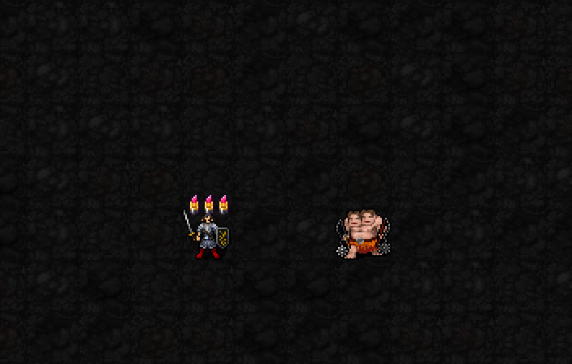

주목을 모두 소모해 다음 공격 주문에 추가 타격을 예약하는 권능의 시각 초안입니다.
예정 해금: 신앙75 · 최소 기도술 제한 없음
예정 비용: MP2·신앙3·0.5턴 · 주목 최소1개 필요

| 표시 | 의미 |
|---|---|
| 세워진 립스틱1·2·3개 | 1성 주목 중첩. 이번 예시는3중첩 준비 |
| 기울어진 립스틱 하나 | 주목을 소모한 뒤 다음 주문의 앙코르 대기 표시 |
| 몹 몸통의 분홍·보라 펄 폭발 | 몹 몸통에서 펑 터지는 펄 폭발. 분홍·보라 퍼프,흰빛·금빛 마름모 섬광,잔광으로 소멸. 검기·비행 궤적 없음 |
실제 SDL 렌더러에 각 단계를 준비한 시각 초안입니다. 중간 일반 타격은 특정 주문이 아닌 공통 타격 표시로 대신했습니다. 주문 시전·MP/신앙 차감·중첩 소모·추가 피해는 아직 새 전투 코드에 연결되지 않았습니다. 이번 장면에서 몹HP는 줄지 않습니다.
| 항목 | 예정 효과 |
|---|---|
| 소모 | 현재 주목을 모두 소모.최소1개 |
| 추가 타격 | 원래 준 피해의40+10×소모중첩+⌊I/6⌋%. I12:1/2/3중첩→52/62/72% |
| 추가 소모 | 앙코르 추가 타격 자체는MP를 다시 쓰지 않음. 원래 공격 주문의MP는 정상 소모 |
| 예약·대기 | 예약4턴 유지,사용 후5턴 재사용 대기 |
| 복제 제한 | 피해만 추가. 상태이상·소환·지형 효과는 복제하지 않음 |
추가 타격 펄 폭발은32×32타일 안에서18×18→28×28→26×26(잔광)픽셀로 표시합니다. 1성 립스틱 시각 승인,3성 시각 검토 중. 전투 구현은 미완료이고 일반 실행본은su-five01을 유지합니다. 시각 단계·RNG/상태 보존 및22신 회귀·저장 복원 검사 통과.
디자인 참고: 홀로라이브 공식 비비 일러스트의 분홍·보라 색감,마름모 반짝임과 화장품 금색 포인트.
크기 조정: 최대24→28픽셀(약17% 확대). 색감·반짝임·위치·연출 시간은 유지했습니다.